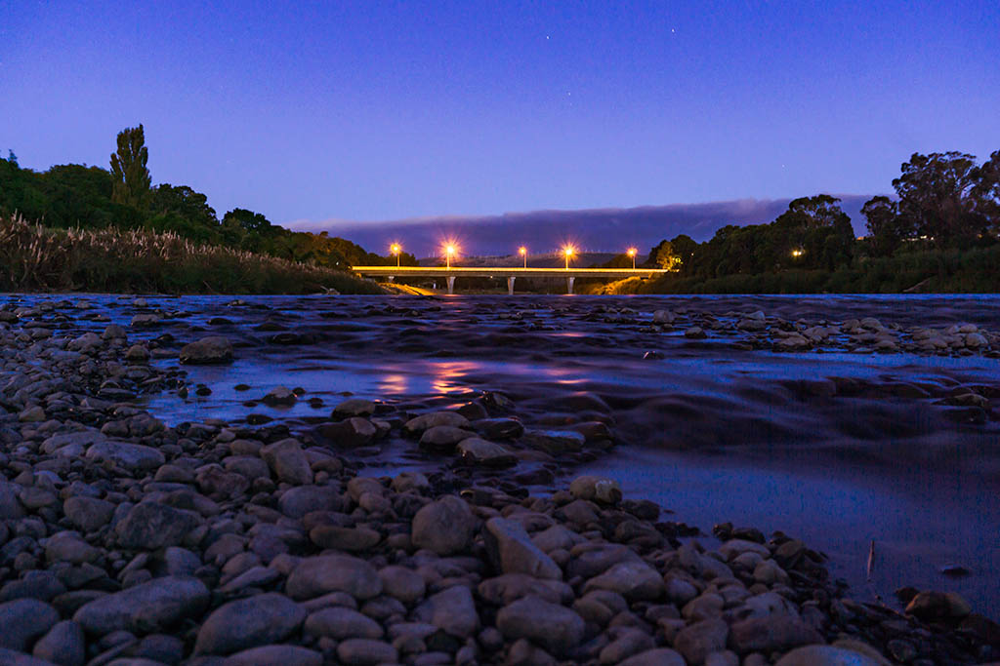

Palmerston North is the eighth-largest urban area of New Zealand. Massey University is located here, providing a large young population for the city. Thus, Palmerston North has a very young population age structure and has one of the youngest populations in New Zealand, so Palmerston North is also known as the "University City". Heritage collections, art galleries and urban street art are prominent in Palmerston North, and go hand in hand with the colourful array of cafes and dinning options that will take your taste buds on a tour of the world.
A year-round calendar of events keeps the city alive and humming, from motorsport mayhem, to urban festivals of creativity and music that bring the streets alive with their colour and sounds. Visit the New Zealand Rugby Museum and go on a journey to discover the story behind the sport that shaped New Zealand. See some of the world's rarest rugby artefacts, and learn about our rugby greats.
An internationally recognized theatre scene provides entertainment for all genres, while the local music scene thrives with a mixture of mainstream and 'underground' venues that cater to wide and varied tastes. The city of Palmerston North is bordered by the Tararua and Ruahine mountain ranges, spectacularly divided by the Te Apiti - Manawatu Gorge making a unique landscape that offers mountains to sea, city to countryside, all in the same day.
In the ranges that flank the city there is often sustained wind, especially in spring. Much of this land is within the city boundaries and these ranges have the reputation of providing the most consistent wind in the country. Close to the city is the largest electricity-generating series of wind farms in the southern hemisphere, with 286 turbines in the Tararua and Ruahine Ranges providing power for approximately 50,000 homes.